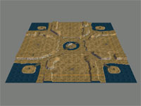
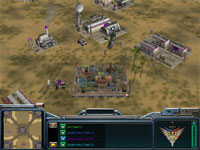
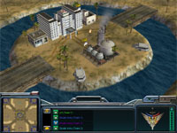
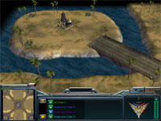
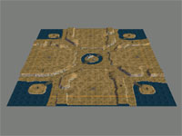
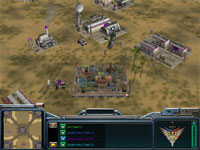
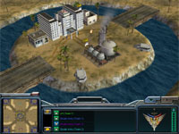
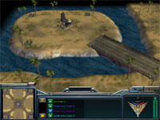

   
   Download this map for Generals Zero Hour or Generals
Red Cross Special Edition is basically the same map as Red
Cross. I have added a few bunkers, and resources have been scattered out
towards the center and corners of the map. The center island holds an oil refinery
instead of the original oil derrick. Replaced textures for a different feel.
You can build a fortress and defend yourself, or rush your enemy. Anything is
possible, but you have to decide quickly!
Desert and mountain ridges. Islands in each corner of the map and one central island. The islands are connected through a desert road network. There are small bunkers on each side of your starting position, and on the mountain ridges as well as the central island. Two civilian houses on the island in the middle as well.
One supply dock in each base area and an oil derrick nearby. The corner islands have oil derricks and some extra supplies. The central island also hosts a Red Cross hospital and an oil refinery.
This map is simple enough to offer perfect AI settings. Oil derricks are captured asap by the computer, and the hospital and oil derick are often destroyed before I get a chance to see it. If the battle goes on the AI sometimes send troops to hold the central island for no particular reason.